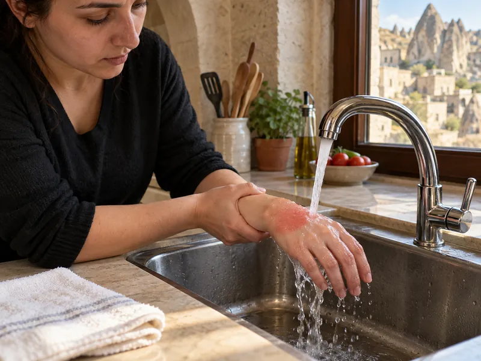

İlk YardımKonu 9 / 1022 çıkmış soru
Yanık, donma, zehirlenme ve elektrik çarpması
Yanıkların derecelerini ve ağırlığını belirleyen etkenleri; ısı, kimyasal ve elektrik yanıklarında ilk yardımı, sıcak ve güneş çarpmasını, donmayı, karbonmonoksit (egzoz gazı) ve sindirim yoluyla zehirlenmelerde yapılacakları kapsar.

1Konu anlatımı
Akılda kalsın
- Yanığın ağırlığını belirlemede en önemli etkenler yanık yüzeyinin genişliği ve yanığın derinliğidir.
- Birinci derece yanık en hafif yanıktır, iz bırakmaz; üçüncü derece yanıkta sinir uçları harap olduğundan ağrı hissedilmeyebilir.
- Isı yanığı temiz, soğuk ve tazyiksiz suya tutulur; su dolu kabarcıklar patlatılmaz. Kimyasal yanık bol suyla yıkanır.
- Elektrik çarpması yanık, kas krampı ve kırıklar ile kalp ve solunum durmasına yol açabilir; kazazedeye dokunmadan önce akım kesilir.
- Egzoz gazındaki karbonmonoksit solunum yoluyla zehirler, kanın oksijen taşımasını engeller; kazazede hemen açık havaya çıkarılır.
- Sıcak çarpmasında bitkinliğin nedeni terlemeyle su ve tuz kaybıdır; kişi serin yere alınır, bilinci açıksa tuzlu ayran veya meyve suyu içirilir. Güneş çarpmasında ilk etkilenen organ beyindir.
- Donmada kazazede soğuk ortamdan uzaklaştırılır, önce ılık sonra sıcak ortama alınarak yavaş ısıtılır; donan bölge ovulmaz.
Yanıklar ve dereceleri
Yanık; ısı, kimyasal madde, elektrik ya da ışın etkisiyle dokuların zarar görmesidir. Yanığın ağırlığını belirlemede en önemli etkenler yanık yüzeyinin genişliği ve yanığın derinliğidir; geniş ve derin yanıklar hayati tehlike oluşturur. Yanığın yeri (yüz, el, ayak, eklemler, solunum yolları) ve kazazedenin yaşı da önemlidir.
| Derece | Etkilenen tabaka | Belirtiler |
|---|---|---|
| 1. derece | Derinin yalnızca üst tabakası | Kızarıklık, ağrı, hafif şişlik; su toplamaz. En hafif yanıktır, iz bırakmadan iyileşir (ör. güneş yanığı). |
| 2. derece | Derinin üst ve orta tabakaları | Kızarıklık, şiddetli ağrı ve su dolu kabarcıklar. |
| 3. derece | Derinin tüm katları ve altındaki dokular | Deri beyaz, kahverengi ya da siyah, kuru ve sert görünür. Sinir uçları harap olduğundan yanık bölgede ağrı hissedilmeyebilir. |
Isı yanıklarında ilk yardım
- Kendi güvenliğinizi sağlayın. Giysisi yanan kişi koşturulmaz; yere yatırılıp yuvarlanarak ya da battaniyeyle örtülerek alev söndürülür.
- Yanık bölge en az 20 dakika temiz, soğuk ve tazyiksiz suyun altında tutulur. Buz doğrudan uygulanmaz.
- Yüzük, saat, bilezik gibi eşyalar bölge şişmeden çıkarılır; yanığa yapışmış giysiler çekilip çıkarılmaz.
- Su dolu kabarcıklar patlatılmaz; mikroplara karşı doğal bir örtüdür.
- Yanığa diş macunu, yoğurt, salça, yağ, merhem, tentürdiyot ya da oksijenli su sürülmez.
- Yanık temiz bir örtüyle kapatılır; geniş yanıklarda şoka ve ısı kaybına karşı önlem alınır, 112 aranır.
Kimyasal yanıklar
Öncelik, kimyasal maddeyi deriden uzaklaştırmaktır. Kimyasal bulaşmış giysiler eldivenle çıkarılır ve bölge bol, akan suyla uzun süre yıkanır. Göze kimyasal sıçradığında göz bol suyla yıkanır. Yanığa merhem sürülmez; kimyasalı deride tutacak şekilde kapatılmaz.
Elektrik çarpması
Elektrik akımı vücuttan geçerken giriş ve çıkış noktalarında yanık, kaslarda şiddetli kasılma ve kramp, buna bağlı kırık ve çıkıklar oluşturabilir; kalbin ritmini bozarak kalp ve solunum durmasına yol açabilir. İshal veya kabızlık elektrik çarpmasının etkileri arasında yer almaz.
- Kazazedeye dokunmadan önce akım kesilir (sigorta, şalter). Kesilemiyorsa kuru tahta, plastik gibi yalıtkan bir cisimle kazazede kaynaktan uzaklaştırılır; ıslak zeminde durulmaz.
- Yüksek gerilim hatlarına yaklaşılmaz, 112 aranır.
- Yaşam bulguları değerlendirilir, gerekirse temel yaşam desteği uygulanır; giriş ve çıkış yanıkları temiz bir bezle örtülür.
Sıcak çarpması ve güneş çarpması
Sıcak çarpması: Sıcak ortamda aşırı terleme sonucu vücuttan fazla miktarda su ve tuz kaybı olur; halsizlik, baş dönmesi, kas krampları ve bitkinlik görülür. Kişi serin bir yere alınır, giysileri gevşetilir; bilinci açıksa kaybedilen su ve tuzu yerine koymak için tuzlu ayran, meyve suyu gibi sıvılar içirilir.
Güneş çarpması: Uzun süre güneş altında kalmaya bağlı olarak vücut ısısı tehlikeli şekilde yükselir. Isıya en duyarlı olan beyin hücreleri ilk etkilenir; baş ağrısı, bilinç bulanıklığı ve havale görülebilir. Kişi serin ve gölge bir yere alınır, giysileri gevşetilir ve ıslak bezlerle vücut ısısı düşürülür. Bilinci kapalıysa ağızdan bir şey verilmez, 112 aranır.
Donma
- Kazazede önce soğuk ortamdan uzaklaştırılır; ıslak giysileri çıkarılıp kuru giysi ve battaniyeyle sarılır.
- Vücut ani değil kademeli olarak ısıtılır: kazazede önce ılık, sonra sıcak ortama alınır.
- Donmuş bölge ovulmaz, masaj yapılmaz; soba, elektrikli battaniye gibi doğrudan ısı kaynaklarına yaklaştırılmaz. Su kabarcıkları patlatılmaz.
- Bilinci açıksa ılık ve şekerli içecekler verilebilir; alkol verilmez. 112 aranır.
Zehirlenmeler
Karbonmonoksit (egzoz gazı) zehirlenmesi
Karbonmonoksit renksiz ve kokusuz bir gazdır; egzoz, soba, şofben gibi kaynaklardan çıkar ve solunum yoluyla zehirler. Kandaki hemoglobine oksijenden çok daha kolay bağlanarak kanın oksijen taşımasını engeller ve boğucu etki yapar. Baş ağrısı, baş dönmesi, bulantı, halsizlik, bilinç bulanıklığı ve bilinç kaybı görülür. En tehlikeli durumlardan biri, kapalı garajda uzun süre çalıştırılan aracın egzoz gazına maruz kalmaktır; gaz dışarı atılamaz ve birikir.
İlk yardım: Kendi güvenliğinizi koruyarak ortamı havalandırın ve kazazedeyi hemen açık havaya çıkarın. 112 aranır; solunum yoksa temel yaşam desteği uygulanır, bilinci kapalı ama soluyorsa koma pozisyonu verilir. Kusturmak, yoğurt yedirmek ya da tuzlu su içirmek solunum yoluyla zehirlenmede işe yaramaz.
Sindirim yoluyla zehirlenme
İlaç, temizlik maddesi, zehirli mantar gibi maddelerin yutulmasıyla olur. Kazazede kusturulmaz, ağızdan bir şey verilmez; yutulan maddenin kutusu ya da ambalajı sağlık ekibine gösterilmek üzere saklanır ve 112 aranır. Bilinci kapalı ama soluyan kişiye koma pozisyonu verilir.
2Bu konunun soruları
MEB sınavlarında bu konudan çıkmış 22 soru (4 tanesi en az üç sınavda soruldu). Her soruda doğru cevabı ve açıklamasını hemen görürsünüz.
Hangi sorular?
Sıralama